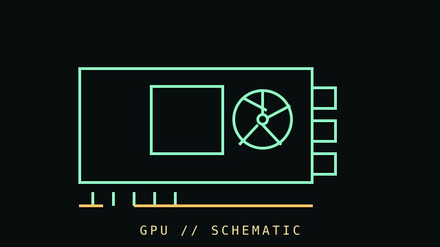

[ VENDOR DIRECTORY // 4 FILES // 259 PART RECORDS ]
Browse GPUS by vendor
Top-level taxonomy is vendor-first. Open a vendor to browse individually cataloged parts, then drill into model records.
GeForce, Quadro/RTX, Tesla and mobile NVIDIA records.
OPEN VENDOR DIRECTORY →VENDOR FILE // 84 PART RECORDSAMD and ATI graphics productsATI Radeon, FireGL/FirePro and AMD Radeon/PRO records.
OPEN VENDOR DIRECTORY →VENDOR FILE // 28 PART RECORDSIntel graphics productsIntel discrete and mobile/integrated graphics records.
OPEN VENDOR DIRECTORY →VENDOR FILE // 23 PART RECORDSOther GPU vendors and accelerators3dfx, Matrox, S3 and other non-AMD/NVIDIA/Intel records.
OPEN VENDOR DIRECTORY →[ COMPONENT RECORD // GRAPHICS PROCESSING ]
Graphics
processors.
Graphics processing may be integrated into a CPU/system-on-chip or provided by a discrete add-in card. A card includes more than its GPU: memory, voltage regulation, cooling, firmware, and output circuitry matter too.

CLASS RECORD: desktop graphics hardware. Performance, power, dimensions, and feature support are specific to the exact card model, not just the GPU chip name.
Reference specifications
| Host interface | Usually PCI Express; physical x16 connectors can be electrically wired for fewer lanes. Motherboard slot generation and card capability affect negotiation. |
|---|---|
| Graphics memory | Dedicated cards use VRAM (commonly GDDR family); capacity, bandwidth, bus width, and error behavior vary by model. Integrated GPUs share system memory. |
| Outputs | HDMI, DisplayPort, USB-C/VirtualLink on legacy models, or DVI/VGA on older cards. Supported resolution, refresh rate, and display count depend on exact outputs and firmware. |
| Power & fit | Board power, auxiliary plugs, transient behavior, cooler thickness, length, slot occupancy, and PSU requirement are model-specific. |
Fit, drivers & service
- Compare exact card dimensions to the case; check slot clearance and intake obstruction, not only length.
- Match power connectors and PSU guidance from the card manufacturer. Do not force or improvise high-current adapters.
- Install drivers from the GPU vendor or operating-system distribution. Verify the card's exact product ID and supported OS branch.
- Inspect fans, heatsink, thermal pads, corrosion, and display connectors. Avoid powering a card with damaged or obstructed fans.
- For retro cards, preserve original BIOS/firmware and record subsystem IDs before flashing. Firmware mismatch can render a card unusable.
Sources & further reading
- PCI-SIG — PCI Express specificationsPrimary interface standards; detailed specs may require membership or licensing.
- NVIDIA — GeForce graphics cardsManufacturer product-family information and model pages.
- AMD — Desktop graphics productsManufacturer family pages; use the specific card-board partner's dimensions and power details.